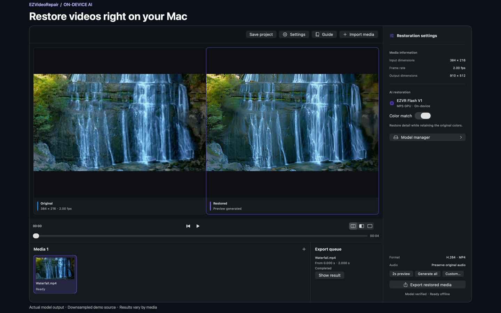
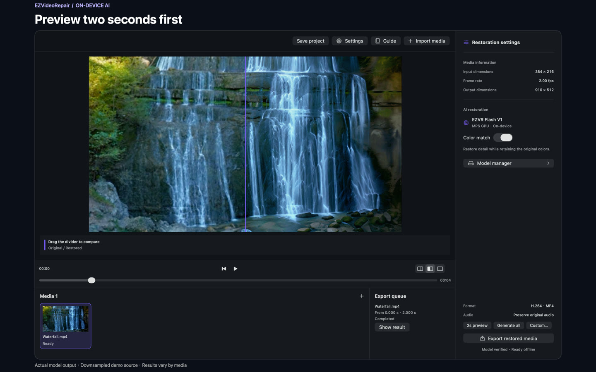
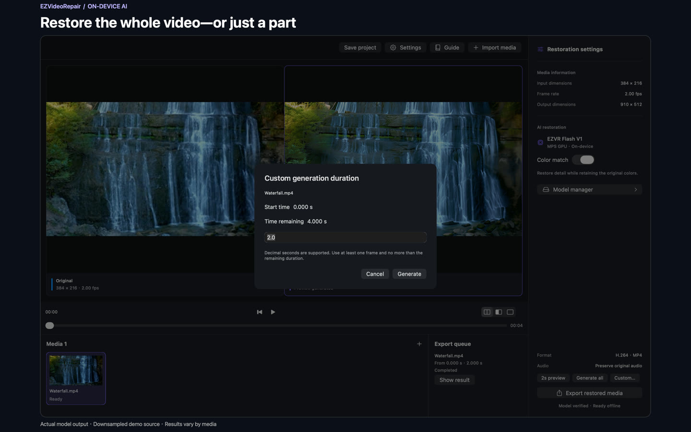
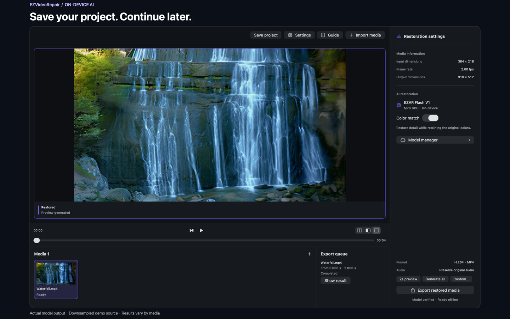
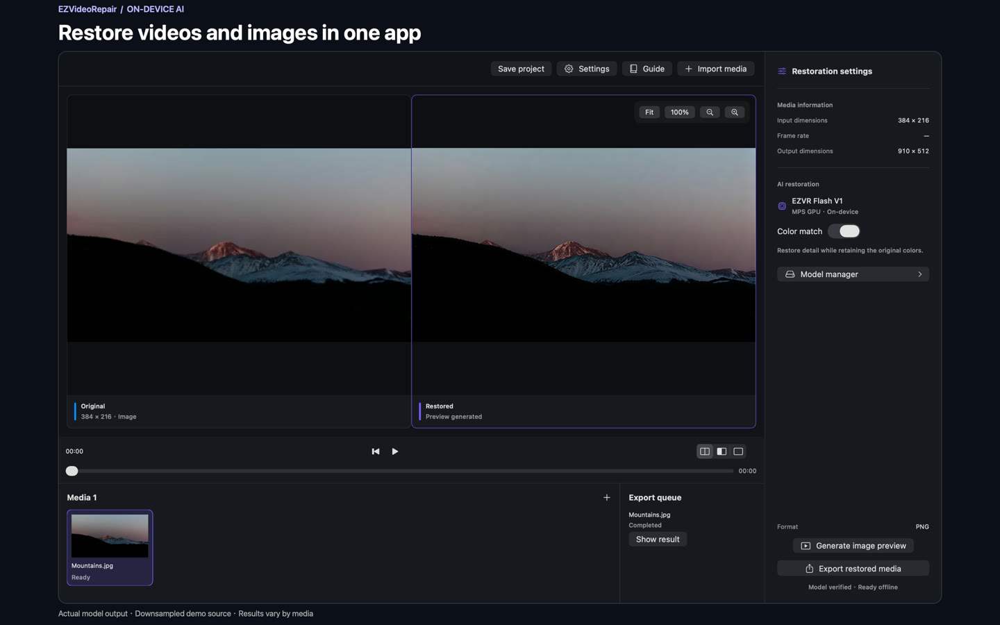

Preview before you commit
Generate a two-second preview from the selected time. Check it before processing the whole video.
A focused, fully local video restoration tool. Improve videos and images with EZVR Flash V1 while keeping your media on your Mac, from preview to export.
Source code and model weights are available. A public app installer is not yet available.

An actual restored two-second clip. Demo input: 384 × 216 at 2 fps. Clip length is not processing time. Download or provide a model first; restoration then works offline.
Open any screenshot at full size. Actual model output with downsampled demo media; results vary by source.




Inference runs locally. Internet access is used to obtain models, not to upload your videos or images.
Less distraction. More focus.
A clear path from import to preview to export, without turning a simple restoration task into a complicated workspace.
Generate a two-second preview from the selected time. Check it before processing the whole video.
Restore a full video or set a custom duration. Work on just the part you need.
Use the same local restoration workflow for video clips and still images.
Projects keep settings, results and restored frames so interrupted work can resume.
Matching media and settings reuse completed results, reducing unnecessary processing.
Download models asynchronously, pause and resume, and see progress after closing Model manager.
From footage to results
Download EZVR Flash V1 in Model manager, or select an existing local model folder.
Import your media, choose a start time, and inspect a two-second preview.
Choose a full video or a custom duration, export the result, or save a project to continue later.
EZVR Flash V1 is a SeedVR2 3B-derived weight package for this app. Downloaded files are checked for integrity before they can be used.
Visit the model repositoryGetting the model requires Internet access. Restoration can run offline once the model is ready.
No. Videos and images are processed on your Mac. Obtaining models makes network requests to the hosting service, but does not upload your media.
Restoration currently supports Apple Silicon Macs only. Intel Macs and Windows are not supported.
The current model targets a 512-pixel short edge. There is no promise of 4K, 8K or frame interpolation. Some outputs may be smaller than the original; check a preview first.
It depends on your Mac, the media and its duration. Processing may take much longer than playback. Start with a two-second preview to decide how much to process.
No. It references the original media and keeps settings, results and restored frames from unfinished tasks. Keep the original media and model separately when moving a project.
The project source is available on GitHub and model weights on Hugging Face. This page does not link to an unreleased installer or an App Store listing.
A focused Mac tool for better-looking footage. Start with a short preview.
View the project